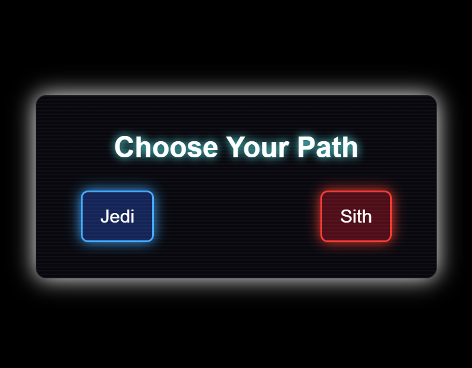
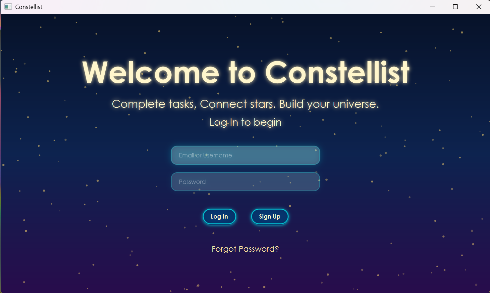
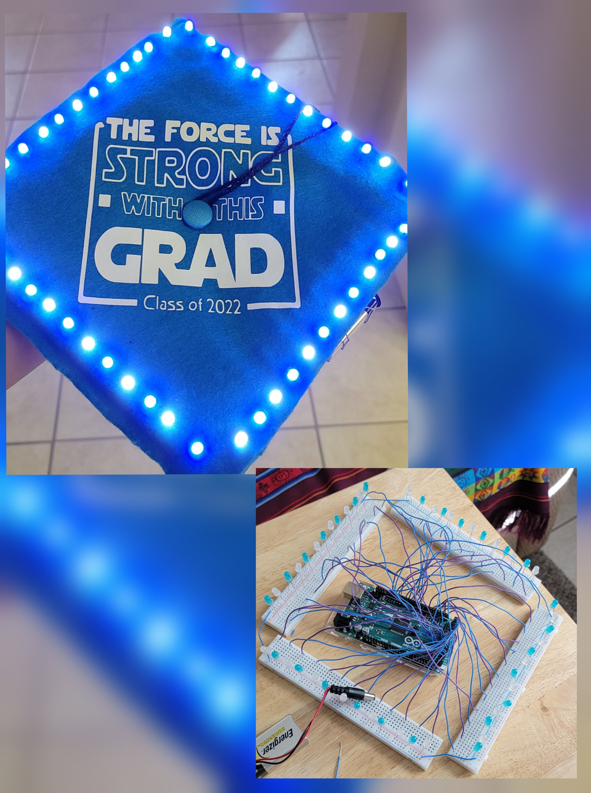

My Projects
CatNet
A browser-based strategy game that teaches real networking and cybersecurity concepts like DNS, firewalls, malware, and DDoS through incident-response gameplay. Features live SVG network visualization, a 5-tier progression system with 10 security incidents, and a persistent save system. Deployed as an installable Progressive Web App.
View on GitHubH.O.R.S.E.
A 2-player arcade take on H.O.R.S.E. with mouse-driven aim and power mechanics. I later extended it into real-time online multiplayer supporting multiple simultaneous game rooms.
Holocron
A full-stack CRUD web app for creating, viewing, and querying Star Wars characters. Uses linked Character and Planet collections, a REST API with filterable queries, and is containerized for deployment.

ForcePath
An interactive Star Wars inspired app where users choose their path, lightsaber, and ship. Choices persist with localStorage and screens change with animated transitions.
Zuni Cultural Story Map
A map-based cultural storytelling web app with an interactive map of culturally significant locations and a categorized Zuni vocabulary tool (greetings, numbers, food, months) for language learning.

Constellate
A JavaFX desktop app that gamifies task management by building constellations as users complete tasks, backed by SQLite. I built the frontend scenes and UI: the task list, constellation view, settings, and progress tracking.
Op-Amp Amplifier Design
Designed inverting and non-inverting amplifiers with a uA741, validated gain in simulation, then built the circuits and compared oscilloscope measurements against expected results.

Arduino Grad Cap
A custom Arduino LED system built into my high school graduation cap, with 16 unique lighting patterns. Involved circuit design, wiring, power management, and debugging for stable performance.
More of my work is on GitHub.